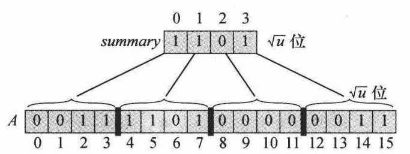
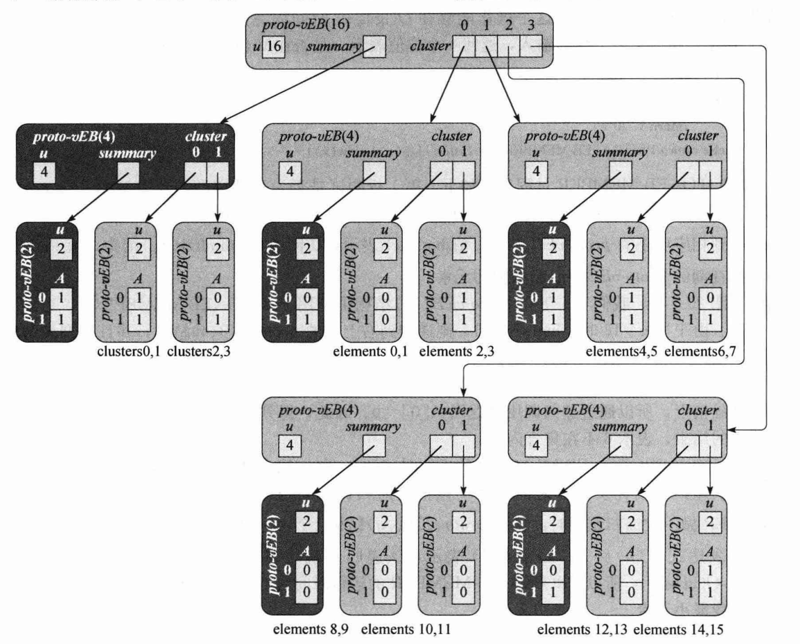
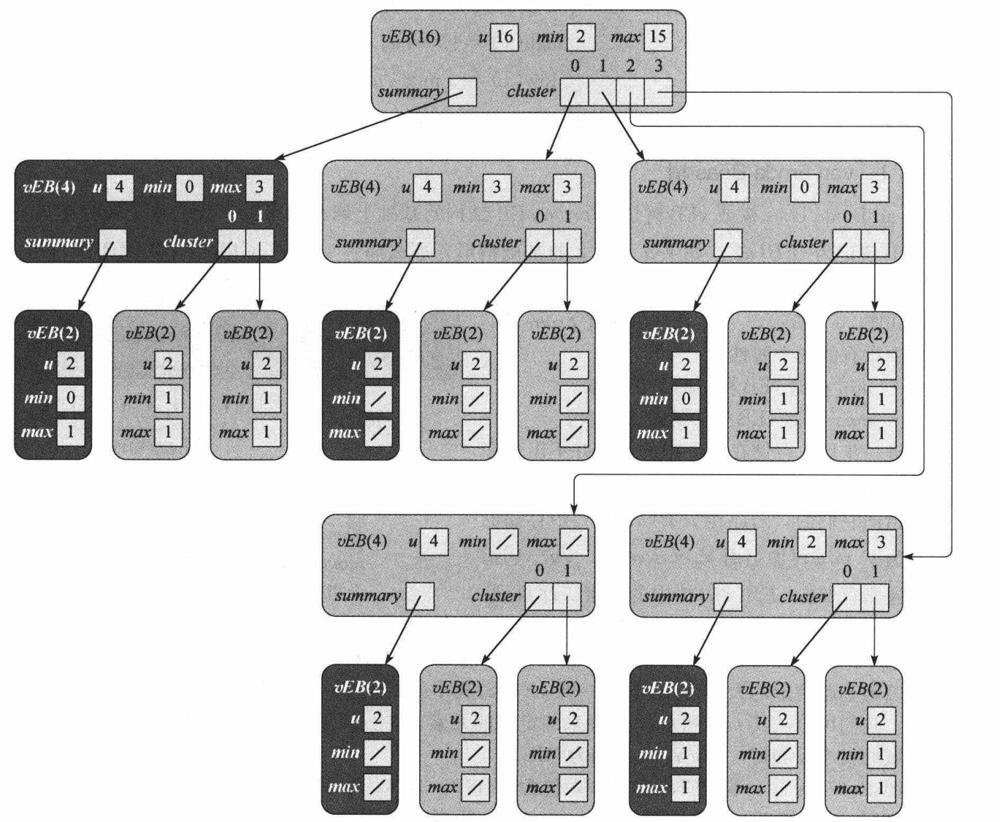

Dynamic Predecessor Problem
给定一个大小 \(u\) 以及 \(n\) 个操作, 每个操作位插入或删除一个介于 \([0,u)\) 之间的整数
操作还包括查询某个数的前驱与后继, 查询全局最小/最大值, 以及查询某个数是否存在
\(u,n\leq 10^7\)
直接用平衡树, 操作数过多, 很吃力
所以另寻他法
vEB 前的一些基本想法
数组
只有插入, 删除, 查询是否存在为 \(O(1)\), 其他都为 \(O(n)\)
在数组上维护一个二叉树
其实就是权值线段树
每次找前驱后继, 就从一个点向上爬, 在向下找最近的 \(1\)
插入删除就从根向下走, 改叶子节点后再回溯回来
最大最小值, 查找同理
操作变成都是 \(O(\log u)\), 还是不够优
改成 \(\sqrt u\) 叉树
整棵树只有两层
按照与上面相同方式维护
用一个 \(summary\) 数组维护儿子的信息

其实就是普通分块
复杂度变成 \(O(\sqrt u)\)
其实如果不是 \(\sqrt u\) 叉树, 而是 \(\omega\) 叉树, 取常用 \(\omega=64\), 这个结构就与压位 Trie 十分类似了 (一个复杂度为 \(O(\log_{w}u)\) 的数据结构)
虽然 \(O(\sqrt u)\) 比前面的 \(O(\log u)\) 还差, 但是这些想法很重要
proto-vEB
递归结构
想象一个结构, 如果一个节点维护的是大小为 \(u\) 的区间, 每次向下都会分出 \(\sqrt u\) 个大小为 \(\sqrt u\) 的区间, 也就是一个 \(u\) 级节点有 \(\sqrt u\) 个 \(\sqrt u\) 级子节点
这样的复杂度用递归式表示:
\(T(u)=T(\sqrt u) + O(1)\)
令 \(u = 2^m\), \(S(m)=T(2^m)\), 则得到 \(S(m)=S(m/2)+O(1)\)
主定理得到 \(S(m)=O(\log m)\)
即 \(T(u)=O(\log m)=O(\log \log u)\)
我们要根据这种关系构造一个树
Prototype of van Emde Boas Tree
我们假设 \(u=2^{2^k}\), 这是一个比较苛刻的条件
一个原形就有了, 我们定义一个 \(u\) 级 proto-vEBT 有值域 u, 儿子节点 cluster[] 和维护儿子信息的 summary, 其中 summary 也是一个 \(\sqrt u\) 级 proto-vEBT
同时还有一个数组 A[2], 只在 u=2 的叶子节点上用到, 用来存值, \(1\) 表示这个值有, \(0\) 表示没有
同时有三个函数 high(x), low(x), index(x, y), 分别表示下标 x 的高 \(\log \sqrt u\) 位, 低 \(\log \sqrt u\) 位, 以及 high=x, low=y 对应的原本的下标值
其中 high(x) 表示 x 存在哪个儿子里, low(x) 表示 x 在儿子块的哪一位里
一颗完整的树长成这样:

树里存了 \(2,3,4,5,7,14,15\) 这些值
节点定义
class Node{
int u;
int sqrt_u;
vector<Node*> cluster;
Node* summary;
int A[2];
Node(int u) : u(u){
sqrt_u = (int) sqrt(u);
A[0] = A[1] = 0;
cluster.resize(sqrt_u);
for(int i = 0; i < sqrt_u; ++i) cluster[i] = NULL;
summary = NULL;
}
Node(){}
inline int high(int x){
return (int)(x / sqrt_u);
}
inline int low(int x){
return (x % sqrt_u);
}
inline int index(int x, int y){
return (x * sqrt_u + y);
}
friend class proto_vEBT;
};
member
直接从根递归下去找即可
bool member(Node* now, int x){
if(now->u == 2) return now->A[x];
return member(now->cluster[now->high(x)], now->low(x));
}
minimum
需要找一下最小的块, 如果不存在, 说明树为空, 直接返回
否则进入最小的块里递归查找
int minimum(Node* now){
if(now->u == 2){
return (now->A[0] == 1 ? 0 : (now->A[1] == 1 ? 1 : NIL));
}else{
int min_cluster = minimum(now->summary);
if(min_cluster == NIL) return NIL;
else{
int offset = minimum(now->cluster[min_cluster]);
return now->index(min_cluster, offset);
}
}
}
successor
先找到在 x 对应的子块中的后继是否存在, 如果存在直接返回
否则说明 x 是它所在子块中的最大值, 它的后继在下一块中
如果不存在下一块, 就说明没有后继, 返回空
不然就进入下一块递归查找
int successor(Node* now, int x){
if(now->u == 2){
if(x == 0 && now->A[1] == 1) return 1;
else return NIL;
}else{
int offset = successor(now->cluster[now->high(x)], now->low(x));
if(offset != NIL) return now->index(now->high(x), offset);
else{
int succ_cluster = successor(now->summary, now->high(x));
if(succ_cluster == NIL) return NIL;
else{
offset = minimum(now->cluster[succ_cluster]);
return now->index(succ_cluster, offset);
}
}
}
}
insert
每次直接插入下层的子块和这一层的 summary 块即可
void insert(Node* now, int x){
if(now->u == 2){
now->A[x] = 1;
}else{
insert(now->cluster[now->high(x)], now->low(x));
insert(now->summary, now->high(x));
}
}
proto_vEBT
整体的代码如下:
class proto_vEBT{
public:
static const int NIL = -1;
Node* root;
int u;
proto_vEBT(){}
proto_vEBT(int u) : u(u){
root = new Node(u);
build(root);
}
void build(Node* now){
if(now->u == 2) return;
for(int i = 0; i < now->sqrt_u; ++i){
now->cluster[i] = new Node(now->sqrt_u);
build(now->cluster[i]);
}
now->summary = new Node(now->sqrt_u);
build(now->summary);
}
bool member(int x){
return MEMBER(root, x);
}
bool MEMBER(Node* now, int x){
if(now->u == 2) return now->A[x];
return MEMBER(now->cluster[now->high(x)], now->low(x));
}
int minimum(){
return MINIMUM(root);
}
int MINIMUM(Node* now){
if(now->u == 2){
return (now->A[0] == 1 ? 0 : (now->A[1] == 1 ? 1 : NIL));
}else{
int min_cluster = MINIMUM(now->summary);
if(min_cluster == NIL) return NIL;
else{
int offset = MINIMUM(now->cluster[min_cluster]);
return now->index(min_cluster, offset);
}
}
}
int successor(int x){
return SUCCESSOR(root, x);
}
int SUCCESSOR(Node* now, int x){
if(now->u == 2){
if(x == 0 && now->A[1] == 1) return 1;
else return NIL;
}else{
int offset = SUCCESSOR(now->cluster[now->high(x)], now->low(x));
if(offset != NIL) return now->index(now->high(x), offset);
else{
int succ_cluster = SUCCESSOR(now->summary, now->high(x));
if(succ_cluster == NIL) return NIL;
else{
offset = MINIMUM(now->cluster[succ_cluster]);
return now->index(succ_cluster, offset);
}
}
}
}
void insert(int x){
INSERT(root, x);
}
void INSERT(Node* now, int x){
if(now->u == 2){
now->A[x] = 1;
}else{
INSERT(now->cluster[now->high(x)], now->low(x));
INSERT(now->summary, now->high(x));
}
}
};
虽然 erase, predecessor 等函数还未实现, 不过与 insert, successor 是对称的
其中 erase 可能需要多维护一个值: 当前节点的值的数量 n, 方便判断是否将某一块删空, 方便更新
一些问题
操作 minimum 调用了两次递归, 递归式 \(T(u)=2T(\sqrt u)+O(1)\) 的解为 \(T(u)=O(\log u)\)
操作 successor 调用了两次递归, 同时每层调用了 \(O(\log \sqrt u)=O(\log u)\) 的 minimum, 递归式 \(T(u)=2T(\sqrt u)+O(\log u)\) 的解为 \(T(u)=O(\log u\log\log u)\)
操作 insert 调用了两次递归, 递归式 \(T(u)=2T(\sqrt u)+O(1)\) 的解为 \(T(u)=O(\log u)\)
下面引入真正的 vEB, 通过维护额外信息减少递归次数, 使所有操作复杂度为 \(O(\log \log u)\)
同时删除 \(u=2^{2^k}\) 的条件, 改为 \(u=2^k\), 对于任意 \(k\) 都成立
vEB
我们把原本的 A[2] 删除, 改为维护 minimum, maximum
对于叶子节点直接存两个值
对于内部节点, 如果 \(u=2^{2k+1}\), 即指数为奇数, 开根开不出整数
那么我们让块的大小为 \(2^{\lfloor\frac{\log u}{2}\rfloor}=2^k=^\downarrow\\!\\!\\!\\!\\!\sqrt u\)
块的数量为 \(2^{\lceil\frac{\log u}{2}\rceil}=2^{k+1}=^\uparrow\\!\\!\\!\\!\\!\sqrt u\)
注意 summary 的参数为 \(^\uparrow\\!\\!\\!\sqrt u\)
之前的树变成这样:

这样不会使复杂度变差，因为我们有:
\(T(u)\leq T(^\uparrow\\!\\!\\!\sqrt u)+O(1)\)
\(S(m)\leq S(\lceil m/2\rceil)+O(1)\leq S(3m/2)+O(1)\)
\(S(m)=O(\log m)\)
\(T(u)=O(\log \log u)\)
~~具体实现操作要说的太多了, 不讲了~~
可以看代码和注释, 也可以直接看算法导论
再说说 minimum, maximum
首先, 这两个值让查询最大最小值变为 \(O(1)\)
这使得 successor, predecessor 的复杂度先变为 \(T(u)=2T(\sqrt u)+O(1), T(u)=O(\log u)\)
其次，可以通过 minimum, maximum 函数判断前驱后继是否在 x 所在子块中, 这样只需要一次递归, 复杂度变为 \(O(\log \log u)\)
值得注意的是, minimum 一定不会 出现在当前子树的任意一个 cluster[] 里, 但是 maximum 可能会
这个设计很像 B+ 树的内部节点的索引值, 最小的索引不会出现
为什么这么设计?
首先是因为它可以让 insert 中更新 cluster[] 和更新 summary 不会同时进行
具体地, 如果插入进空节点, 直接改 minimum
如果插入进只有 minimum 的节点，此时 cluster[] 为空, 需要更新 summary, 同时插入进 cluster[] 中
但是要插入的元素会成为 cluster[high(x)] 中的唯一元素, 也就是说, 直接改那一块的 minimum 即可，不需要递归
如果插入进已经有大于等于两个元素的节点, 那么 summary 已经存在值，不需要更新, 所以只进行一次递归
因此 insert 变成了只需一次递归，复杂度变成 \(O(\log \log u)\)
其次, erase 的第二个递归调用时，更改了 summary, 这说明块中唯一的元素被删除了
所以第一个递归只会占用 \(O(1)\) 时间, 因为 if(minimum == maximum) minimum = maximum = NIL
保证了递归在这里结束
这也是 minimum 不存在块中带来的好处, 因为如果在块中, 仍然需要递归到下层才能彻底删除值, 而现在只需要将当前层的 minimum 标记清零即可
除此之外，如果第一个递归会进入更深层, 那说明块中至少两个元素，删除一个后仍然非空，则不会进入第二个递归
所以删除也只需要一个递归
至此，所有操作复杂度都为 \(O(\log \log u)\)
code:
class Node{
public:
static const int NIL = -1;
int u;
int upper_u, lower_u, rank_u;
//vector<Node*> cluster;
Node** cluster;
Node* summary;
int minimum, maximum; // minimum must not appear in any subtrees (clusters), but maximum can
Node(int u, int rank_u) : u(u), rank_u(rank_u){
lower_u = (1 << (rank_u >> 1));
upper_u = u / lower_u;
minimum = maximum = NIL;
cluster = (Node**)(malloc(sizeof(Node*)*upper_u));
//cluster.resize(upper_u);
for(int i = 0; i < upper_u; ++i) cluster[i] = NULL;
summary = NULL;
}
Node(){}
~Node(){
free(cluster);
free(summary);
}
inline int high(int x){
return (int)(x / lower_u);
}
inline int low(int x){
return (x % lower_u);
}
inline int index(int x, int y){
return (x * lower_u + y);
}
friend class vEBT;
};
class vEBT{
public:
static const int NIL = -1;
Node* root;
int u;
int getbit(int n){
int ret = 0;
while(n) ++ret, n >>= 1;
return ret;
}
vEBT(){}
~vEBT(){
free(root);
}
vEBT(int u){
int t = getbit(u);
if((1 << (t - 1)) != u) u = (1 << ((++t) - 1));
root = new Node(u, t - 1);
build(root);
}
void build(Node* now){
if(now->u == 2) return;
for(int i = 0; i < now->upper_u; ++i){
now->cluster[i] = new Node(now->lower_u, now->rank_u >> 1);
build(now->cluster[i]);
}
now->summary = new Node(now->upper_u, now->rank_u - (now->rank_u >> 1)); // note !
build(now->summary);
}
int member(int x){
return MEMBER(root, x);
}
int MEMBER(Node* now, int x){
if(x == now->maximum || x == now->minimum) return 1;
else if(now->u == 2) return -1;
else return MEMBER(now->cluster[now->high(x)], now->low(x));
}
int MINIMUM(Node* now){
return now->minimum;
}
int minimum(){
return MINIMUM(root);
}
int MAXIMUM(Node* now){
return now->maximum;
}
int maximum(){
return MAXIMUM(root);
}
int SUCCESSOR(Node* now, int x){
if(now->u == 2){
if(x == 0 && now->maximum == 1) return 1;
else return NIL;
}else if(now->minimum != NIL && x < now->minimum){ // x doesn't hit any element
return now->minimum;
}else{
int maximum = MAXIMUM(now->cluster[now->high(x)]);
if(maximum != NIL && now->low(x) < maximum){ // this cluster
int offset = SUCCESSOR(now->cluster[now->high(x)], now->low(x));
return now->index(now->high(x), offset);
}else{ // next cluster
int succ_cluster = SUCCESSOR(now->summary, now->high(x));
if(succ_cluster == NIL) return NIL;
else{
int offset = MINIMUM(now->cluster[succ_cluster]);
return now->index(succ_cluster, offset);
}
}
}
}
int successor(int x){
return SUCCESSOR(root, x);
}
int PREDECESSOR(Node* now, int x){
if(now->u == 2){
if(x == 1 && now->minimum == 0) return 0;
else return NIL;
}else if(now->maximum != NIL && x > now->maximum){ // x doesn't hit any element
return now->maximum;
}else{
int minimum = MINIMUM(now->cluster[now->high(x)]);
if(minimum != NIL && now->low(x) > minimum){ // this cluster
int offset = PREDECESSOR(now->cluster[now->high(x)], now->low(x));
return now->index(now->high(x), offset);
}else{ // next cluster
int pred_cluster = PREDECESSOR(now->summary, now->high(x));
if(pred_cluster == NIL){
if(now->minimum != NIL && x > now->minimum) return now->minimum;
// min is not stored in cluster, but can't be ignored
else return NIL;
}
else{
int offset = MAXIMUM(now->cluster[pred_cluster]);
return now->index(pred_cluster, offset);
}
}
}
}
int predecessor(int x){
return PREDECESSOR(root, x);
}
void EMPTY_INSERT(Node* now, int x){
now->minimum = now->maximum = x;
}
void INSERT(Node* now, int x){
if(now->minimum == NIL) EMPTY_INSERT(now, x);
// update minimum, and put original minimum into cluster
else{
if(x < now->minimum) swap(x, now->minimum);
if(now->u > 2){
int minimum = MINIMUM(now->cluster[now->high(x)]);
if(minimum == NIL){ // no second element in current cluster
// need to update summary, but no need to insert subtree
INSERT(now->summary, now->high(x));
EMPTY_INSERT(now->cluster[now->high(x)], now->low(x));
}else INSERT(now->cluster[now->high(x)], now->low(x)); // insert subtree
}
if(x > now->maximum) now->maximum = x; // update maximum
}
}
void insert(int x){
if(member(x) == -1) INSERT(root, x);
}
void ERASE(Node* now, int x){
if(now->minimum == now->maximum) now->minimum = now->maximum = NIL;
else if(now->u == 2){
if(x == 0) now->minimum = 1;
else now->minimum = 0;
now->maximum = now->minimum;
}else{
if(x == now->minimum){ // update minimum, and erase original element
int min_cluster = MINIMUM(now->summary); // min_cluster may be -1
x = now->index(min_cluster,
MINIMUM(now->cluster[min_cluster]));
now->minimum = x;
}
ERASE(now->cluster[now->high(x)], now->low(x));
// if after erasing x, x's cluster is empty, then this is an O(1) operation
if(MINIMUM(now->cluster[now->high(x)]) == NIL){ // the cluster is empty
// update summary
ERASE(now->summary, now->high(x)); // if recursion is not O(1), this will not be called
if(x == now->maximum){ // update maximum, new maximum is not in x's cluster
int max_summary = MAXIMUM(now->summary);
if(max_summary == NIL){
now->maximum = now->minimum; // no other element except minimum
}else{
// find maximum element in this cluster
now->maximum = now->index(max_summary,
MAXIMUM(now->cluster[max_summary]));
}
}
}else if(x == now->maximum){ // update maximum, new maximum is in x's cluster
now->maximum = now->index(now->high(x),
MAXIMUM(now->cluster[now->high(x)]));
}
}
}
void erase(int x){
if(member(x) == 1) ERASE(root, x);
}
};
~~你猜为什么注释掉了 vector 而用了 malloc ? 因为模板题 MLE 过不了~~
~~慎用 STL~~
模板题
\(n\) 比较小，可以用线段树卡过
当然本文的 vEBT 代码也可以过
提交结果:
| time | memory |
|---|---|
5511ms |
116216kb |
BZOJ 现在好像要挂梯子才能上? 不是很懂
这题 \(n\) 就比较大了, 我的代码只能拿部分分
RS-vEBT
Reduced-space van Emde Boas Tree, 将每个 cluster 开成动态 hash 表
这样空间可以优化掉，因为之前的建树一定是一颗满的树，即使节点里没有存值
这样可能能过 \(n\) 较大的模板题? 没尝试过
- 参考: 算法导论